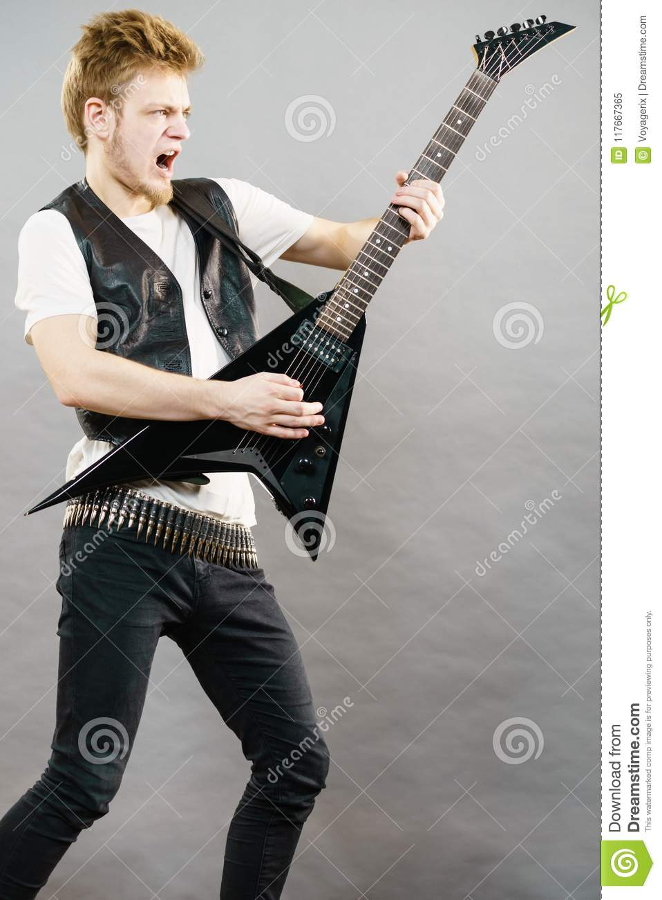

<!DOCTYPE html>
<html>
<head>
<script>
function startTime() {
  var today = new Date();
  var h = today.getHours();
  var m = today.getMinutes();
  var s = today.getSeconds();
  m = checkTime(m);
  s = checkTime(s);
  document.getElementById('txt').innerHTML =
  h + ":" + m + ":" + s;
  var t = setTimeout(startTime, 500);
}
function checkTime(i) {
  if (i < 10) {i = "0" + i};  // add zero in front of numbers < 10
  return i;
}
</script>
</head>

<body onload="startTime()">

<div id="txt"></div>

</body>
</html>
<!DOCTYPE html>
<html>
<meta charset="UTF-8">
<meta name="viewport" content="width=device-width, initial-scale=1">
<link rel="stylesheet" href="/w3css/3/w3.css">
<link rel="stylesheet" href="https://cdnjs.cloudflare.com/ajax/libs/font-awesome/4.6.3/css/font-awesome.min.css">
<head>
  <style>
  /*
    img{
      width: 50%;
      height: 300px;
    }
    */
  </style>
</head>


<body>

<!-- Navigation -->
<nav class="w3-bar w3-black">
  <a href="#home" class="w3-button w3-bar-item">Home</a>
  <a href="#band" class="w3-button w3-bar-item">Band</a>
  <a href="tour.html" class="w3-button w3-bar-item">Tour</a>
  <a href="#contact" class="w3-button w3-bar-item">Contact</a>
</nav>

<!-- Slide Show -->
<section>
  
  
  
</section>

<!-- Band Description -->
<section class="w3-container w3-center w3-content" style="max-width:600px">
  <h2 class="w3-wide">Our Rock Band: Mouse Rat</h2>
  <p class="w3-opacity"><i>We love music</i></p>
  <p class="w3-justify">Rock music is a broad genre of popular music that originated as "rock and roll" in the United States in the early 1950s, and developed into a range of different styles in the 1960s and later, particularly in the United States and the United Kingdom.[1][2] It has its roots in 1940s and 1950s rock and roll, a style which drew heavily from the genres of blues, rhythm and blues, and from country music. Rock music also drew strongly from a number of other genres such as electric blues and folk, and incorporated influences from jazz, classical and other musical styles. Musically, rock has centered on the electric guitar, usually as part of a rock group with electric bass, drums, and one or more singers. Usually, rock is song-based music with a 4/4 time signature using a verse–chorus form, but the genre has become extremely diverse. Like pop music, lyrics often stress romantic love but also address a wide variety of other themes that are frequently social or political.</p>
</section>


  </p>
</footer>

<script>
// Automatic Slideshow - change image every 3 seconds
var myIndex = 0;
carousel();

/*function carousel() {
  var i;
  var x = document.getElementsByClassName("mySlides");
  for (i = 0; i < x.length; i++) {
     x[i].style.display = "none";
  }
  myIndex++;
  if (myIndex > x.length) {myIndex = 1}
  x[myIndex-1].style.display = "block";
  setTimeout(carousel, 3000);
}*/
</script>

</body>
</html>
